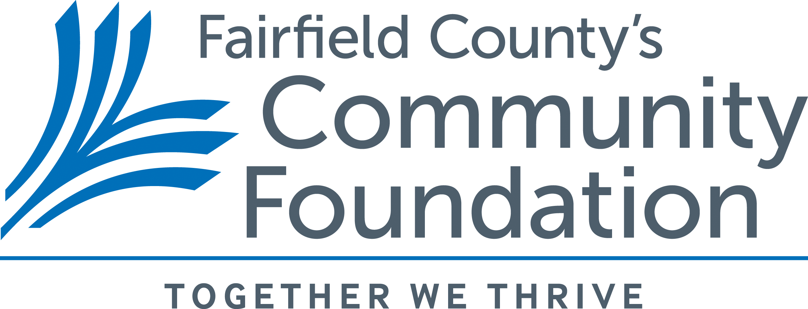

Our Donors
The Connecticut Citizens Assembly wishes to thank our generous donors and benefactors:
Connecticut Conference of Municipalities
Yale ISPS Democratic Innovations Program

Foundation for Community Health

Fairfield County’s Community Foundation
Berkshire Taconic Community Foundation
Fund for Citizens' Assemblies
Miles & G. Elizabeth Lasater
Seth Radwell
This list reflects donors as of April 2026. If you believe there is an error or omission, please contact info@ct-citizens-assembly.org.